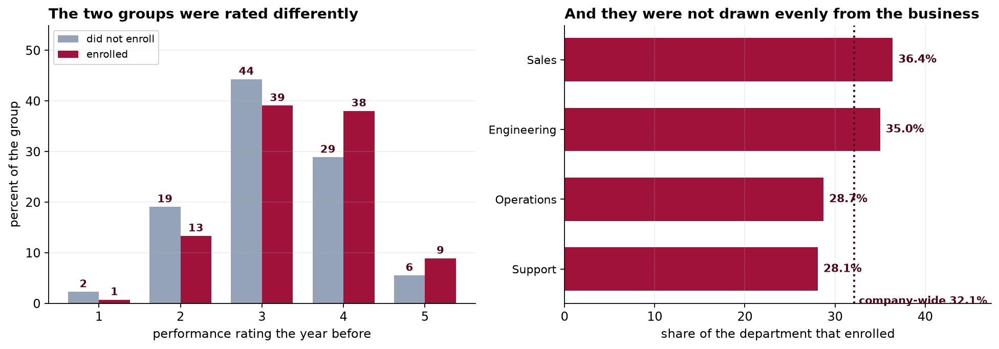

The last two capstones designed their own experiments. This one arrives after the fact, with a program that was never randomized and a question that the data may not be able to answer. The work is to find out which.
- Setting
- An employer's voluntary management-training program. Four thousand employee records, each with department, education, age, tenure, prior performance rating and prior salary, all recorded before enrollment, plus salary growth over the following 12 months.
- The question
- Did the training program raise the salary growth of the people who took it?
- Why it matters
- The program is popular and its budget is up for renewal. A naive comparison makes it look like an unambiguous success, and that comparison is what will be quoted unless somebody does better.
- What we do
- Fit a propensity model on every pre-enrollment covariate, check common support, match with a caliper, verify balance, cross-check with inverse probability weighting, and then ask the only question that can address what the covariates missed: how strong would an unmeasured confounder have to be?
The naive difference is +1.83 percentage points. After matching on six pre-enrollment covariates, with every standardized difference under 0.025, it is +1.67. Weighting agrees at +1.65. The true effect of the program is exactly zero, and the variable that explains the whole thing was never in the file.
Why This Is Not an Experiment
Nobody was randomized. Employees decided for themselves whether to enroll, which means the two groups differ in every respect that influenced that decision, and only some of those respects were written down. The whole apparatus of this chapter exists to substitute for a randomization that never happened.
The analysis plan was written before the outcome data were linked in. Six covariates, all measured before enrollment, an explicit estimand, a balance target, a cross-check by a second method, and a sensitivity analysis that is stated to be non-optional.
Cleaning, and the Naive Comparison
| Step | Rows | What happened |
|---|---|---|
| HR export | 4,055 | The extract ran twice |
| After deduplication | 4,000 | One row per employee |
| Complete cases | 3,880 | 90 with no prior rating on file, 30 with a tenure of −1, which is a sentinel and not a tenure |
Complete-case analysis is a decision, not a default. Dropping 120 employees is defensible only if the reason their records are incomplete is unrelated to their salary growth, which is an assumption nobody has tested. It is disclosed here rather than solved; Capstone 31 takes it up properly.

The Propensity Score, and Common Support
A logistic regression of enrollment on the six covariates gives each employee a probability of enrolling. Before anything is matched, the two distributions have to be compared, because anyone whose score falls outside the range covered by the other group has no counterpart in the data at all.
Good overlap is itself a finding worth reporting: enrollment was not concentrated in some corner of the workforce that nobody else occupies. Five employees have no comparable counterpart and are dropped. In many observational studies this step removes a substantial fraction of the sample and quietly changes who the estimate is about, which is why the number belongs in the write-up whether it is five or five hundred.
Matching, and a Balance Table That Passes
One-to-one nearest neighbor on the logit of the score, without replacement, with a caliper of 0.2 standard deviations. A treated employee with no control inside the caliper is left unmatched rather than paired with somebody who is not really similar: 1,220 pairs from 1,247 enrolled employees, with 27 discarded.
| Covariate | SMD before | SMD after |
|---|---|---|
| Prior performance rating | +0.285 | +0.012 |
| Education, postgraduate | +0.167 | −0.019 |
| Tenure, years | −0.158 | −0.003 |
| Education, high school | −0.157 | +0.015 |
| Department, Sales | +0.109 | −0.013 |
| Department, Operations | −0.107 | +0.016 |
| Age | −0.081 | +0.025 |
| Prior salary | +0.011 | −0.012 |
The largest remaining standardized difference is 0.025, against a conventional target of 0.10. This is what a successful match looks like, and in most published work it is the exhibit offered as evidence that the comparison is now fair.
![Left: overlaid histograms of the propensity score for enrolled and not-enrolled employees, almost entirely overlapping, with dashed lines marking the common support boundaries at 0.10 and 0.64. Right: a balance plot of standardized mean differences. Open circles show values before matching, spread between minus 0.16 and plus 0.29. Filled circles show values after matching, all within a shaded target band from minus 0.1 to plus 0.1. A red diamond at the bottom, labeled ambition not measured, sits at plus 1.06, far outside the plot's other points.](../assets/img/capstone-psm-balance.png)
Two Methods, One Answer, and Barely Any Movement
Two different adjustment methods agreeing closely is genuinely reassuring, and it is reassuring about the arithmetic rather than about the assumption. Matching and weighting use the same six covariates, so they are confounded by anything those covariates miss, and they are confounded by it in the same direction and to the same degree. Agreement between two methods that share an assumption is not evidence for the assumption.
The more uncomfortable number is that adjustment moved the estimate by nine percent. On a well-behaved observational study you might expect the covariates to absorb most of the confounding. Here they absorbed almost none of it, which is a signal about what the covariates are, not about how carefully the matching was done.
How Strong Would a Missing Confounder Have to Be?
This is the step that gets skipped, and it is the only one capable of saying anything about what the covariates did not capture. The E-value is the smallest association an unmeasured confounder would need with both enrollment and salary growth, over and above the measured covariates, to account for the whole estimate.
In much of the applied literature an E-value above 2 is presented as evidence of robustness, and 3.35 would pass without comment. But look carefully at what the E-value says. It tells you how strong a confounder would have to be. It cannot tell you whether one exists, and nothing in the data can, because the data do not contain it.
So the question to put to the client is not a statistical one. Is there some characteristic of an employee, not on our list, that makes them both substantially likelier to sign up for management training and substantially likelier to get a raise? Anyone who has worked in an organization can answer that in about a second, and their answer is worth more than the E-value.
The contour is easier to act on than a single number. Suppose an unmeasured characteristic differs between the groups by δ standard deviations and is worth γ percentage points of salary growth per standard deviation. The estimate falls to zero wherever δ × γ reaches 1.67. A variable worth 1.2 points per standard deviation needs a gap of 1.39 SD; one worth 1.75 points needs a gap of 0.95. Both are entirely ordinary sizes for a workplace characteristic, which is the honest conclusion of the analysis before anyone looks at the answer.
The Sheet That Was Never Available
The workbook carries a second sheet holding an index of how hard each employee was pushing for advancement. It was never in the HR system and no analyst could have used it. We can, because this is a book.
The program does nothing, and it never did. The +1.83 was selection from start to finish, and matching on six carefully chosen pre-treatment covariates removed nine percent of it. The balance table was not misleading anybody: those covariates really were balanced. They were simply not the ones that mattered.
![Left: a contour surface with the effect of an unmeasured variable on growth in percentage points per standard deviation on the horizontal axis and the gap between the groups in standard deviations on the vertical axis. A dark curve marks where the adjusted estimate reaches zero, and a yellow star marks the position of the ambition variable, sitting on that curve. Right: five bars of the estimated effect, naive at 1.83, matched at 1.67, IPTW at 1.65, adding ambition at 0.02, and the truth at zero.](../assets/img/capstone-psm-sensitivity.png)
Notice the order in which that was done. The sensitivity analysis was computed before the reveal, and it gave the correct warning: a confounder of entirely ordinary size would flatten this estimate. Had the analysis stopped at the balance table, the report would have said the program raises salary growth by 1.7 points, and the balance table would have been the proof.
What Propensity Methods Do and Do Not Do
| They do | They do not |
|---|---|
| Remove confounding carried by the covariates you have | Remove confounding carried by anything else |
| Make the comparison transparent, with a balance table anyone can check | Make the comparison valid |
| Reveal where the two groups do not overlap at all | Tell you whether the overlap you have is on the right variables |
| Separate the design stage from the outcome stage, so balance is checked before results are seen | Substitute for randomization |
| Give a defensible estimate when the covariates really are the whole story | Tell you whether they are |
None of that makes the method a bad one. The propensity model in this chapter did its job correctly and the matching was sound. What failed was the assumption of no unmeasured confounding, which is untestable by construction, and which every observational causal claim rests on whether or not it is stated. The contribution of a careful analysis is to make that dependence visible and to price it, which is what the sensitivity analysis did.
What to Watch
- ✓A balance table is evidence about its own columns. Presenting one without saying what is missing invites a reader to conclude something it cannot support.
- ✓Put the sensitivity analysis next to the estimate. An E-value is one number and belongs in the abstract. Its absence reads as a claim that no confounder could exist, which nobody would defend in words.
- ✓A large E-value is not a clean bill of health. This one was 3.35, and "how much somebody wants a promotion" clears that comfortably.
- ✓Adjust only on pre-treatment variables. Adjusting for something measured after enrollment, such as projects led during the year, would remove part of the effect rather than part of the confounding.
- ✓Name the estimand. This is an ATT, the effect on those who enrolled. It is not what would happen if the program were made compulsory.
- ✓Report who was discarded. Twenty-seven enrolled employees had no acceptable match, five fell outside common support, and 120 were dropped for missing covariates. Each changes who the estimate describes.
- ✓Two methods agreeing is not two pieces of evidence. Matching and weighting share an assumption, so they fail together and their agreement says nothing about whether it holds.
Propensity Methods in Data Science & AI
| Where it appears | The same assumption, in a different costume |
|---|---|
| Marketing attribution | Comparing exposed and unexposed users on observed features, where the thing that drove exposure was intent |
| Uplift and heterogeneous effects | Causal forests and meta-learners estimate who benefits most, and inherit unconfoundedness whole |
| Off-policy evaluation | Inverse propensity scoring of a logged bandit policy, where the propensities are known rather than estimated, which is the rare good case |
| Observational model monitoring | Comparing outcomes for users who did and did not receive a model's recommendation |
| Algorithmic fairness auditing | Adjusting for measured covariates to ask whether a disparity is explained, where the unmeasured ones are usually the argument |
The propensity score comes from Rosenbaum and Rubin in 1983, and Rosenbaum's own sensitivity bounds arrived alongside it, which says something about how central the concern always was. The modern alternatives are worth knowing. Doubly robust estimators combine a propensity model with an outcome model and remain consistent if either is right, which helps with misspecification and not at all with a missing variable. Targeted maximum likelihood and double machine learning let flexible learners estimate both stages while preserving valid inference. Every one of them assumes no unmeasured confounding. The methods of the next chapter do not, which is why they exist.
The full project, step by step
The companion notebook reads the analysis plan before the outcomes, cleans the export and reports what it discards, fits the propensity model, trims to common support, implements caliper matching without replacement from scratch, builds the balance table, cross-checks with ATT weighting, computes an E-value and a two-dimensional sensitivity surface, and only then joins the sheet that shows the entire estimate was selection.
The dataset
(capstone-propensity-score-matching.xlsx) holds 4,055 HR records with their duplicates, missing
ratings and tenure sentinels intact, the analysis plan written before the outcomes were linked, and a separate
sheet carrying the variable that was never observed. Two written reports accompany it: a
plain-language brief for the HR director whose budget depends on the answer, and a
technical report covering the propensity model, the balance diagnostics and the sensitivity
analysis.
🎓 Key Takeaways
- ✓Matching balances the covariates you have. Every measured one landed inside 0.025 SD, and the unmeasured one was still separated by 1.06.
- ✓Adjustment moved the estimate by nine percent. The covariates carried almost none of the confounding, which is a fact about the covariates, not about the method.
- ✓Two methods agreeing is one piece of evidence. Matching and weighting share an assumption and fail together.
- ✓The E-value says how strong, never whether. A value of 3.35 read as reassuring, and the missing variable cleared it easily.
- ✓The program's true effect was zero. A textbook-clean analysis reported +1.67 points, and the sensitivity analysis was the only part of it that gave the right warning.